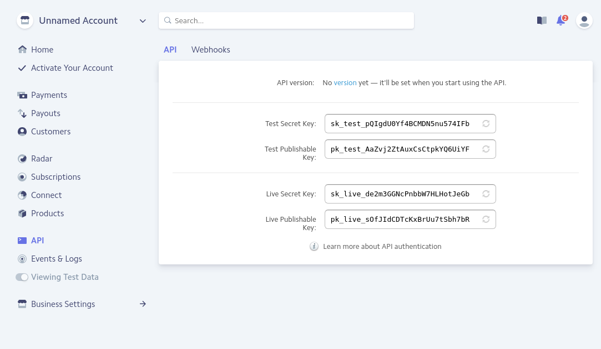
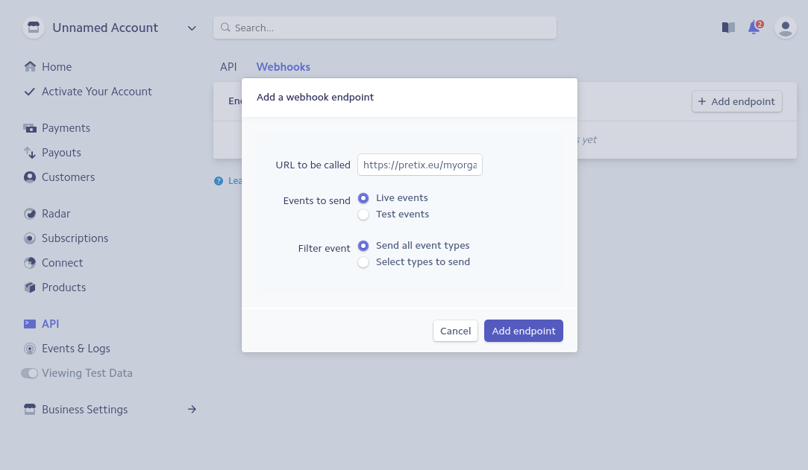

Stripe¶
Note
If you use the Hosted version of pretix at eventyay.com, you do not need to copy API keys and create webhooks any more. Instead, you can just click “Connect with Stripe” in pretix and everything will connect automatically.
To integrate Stripe with eventyay, you first need to have an active Stripe merchant account. If you do not already have a Stripe account, you can create one on stripe.com. Then, click on “API” in the left navigation of the Stripe Dashboard. As you can see in the following screenshot, you will be presented with two sets of API keys, one for test and one for live payments. In each set, there is a secret and a publishable keys.
Choose one of the two sets and copy the two keys to the appropriate fields in eventyay’ settings. To perform actual
payments, you will need to use the live keys, but you can use the test keys to test the payment flow before you go live.
In test mode, you cannot use your real credit card, but only test cards like 4242424242424242 that you can
find in Stripe’s documentation.
If you want Stripe to notify eventyay automatically once a payment gets cancelled, so eventyay can cancel the ticket as well, you need to create a so-called webhook. To do so, click “Webhooks” on top of the page in the Stripe dashboard that you are currently on. Then, click “Add endpoint” and enter the URL that you find directly below the key configuration in eventyay’ settings.
Again, you can choose between live mode and test mode here.